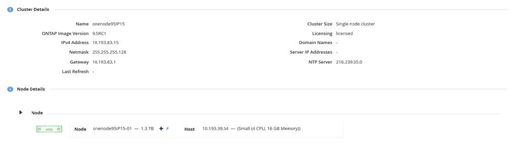
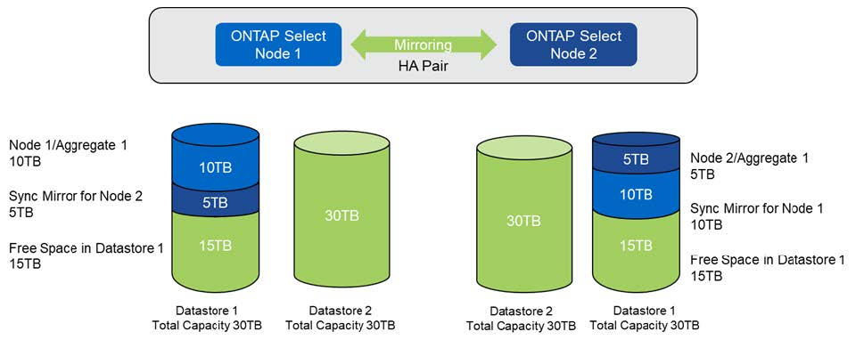

请求文档变更
请求文档变更 在 GitHub 上编辑
在 GitHub 上编辑 提供者指南
提供者指南增加存储容量
ONTAP Deploy 可用于为 ONTAP Select 集群中的每个节点添加和许可额外的存储。
ONTAP Deploy 中的存储添加功能是增加所管理存储的唯一方法，不支持直接修改 ONTAP Select VM 。下图显示了启动存储添加向导的 "+" 图标。

以下注意事项对于容量扩展操作的成功非常重要。要添加容量，需要使用现有许可证来涵盖总空间量（现有空间加上新空间）。导致节点超出其许可容量的存储添加操作将失败。应首先安装具有足够容量的新许可证。
如果向现有 ONTAP Select 聚合添加了额外容量，则新存储池（数据存储库）的性能配置文件应与现有存储池（数据存储库）的性能配置文件类似。请注意，不能将非 SSD 存储添加到安装了类似于 AFF 的特性（已启用闪存）的 ONTAP Select 节点。也不支持混合使用 DAS 和外部存储。
如果将本地连接的存储添加到系统中以提供额外的本地（ DAS ）存储池，则必须构建额外的 RAID 组和 LUN （或 LUN ）。与 FAS 系统一样，如果要向同一聚合添加新空间，应注意确保新 RAID 组的性能与原始 RAID 组的性能相似。如果要创建新聚合，则如果清楚了解新聚合的性能影响，则新 RAID 组布局可能会有所不同。
如果数据存储库的总大小不超过 ESX 支持的最大数据存储库大小，则可以将新空间作为块区添加到同一个数据存储库中。可以动态地向已安装 ONTAP Select 的数据存储库添加数据存储库扩展，而不会影响 ONTAP Select 节点的操作。
如果 ONTAP Select 节点属于 HA 对，则应考虑其他一些问题。
在 HA 对中，每个节点都包含其配对节点的数据的镜像副本。向节点 1 添加空间要求向其配对节点 2 添加相同的空间量，以便将节点 1 中的所有数据复制到节点 2 。换言之，在节点 1 的容量添加操作中添加到节点 2 的空间在节点 2 上不可见或不可访问。将空间添加到节点 2 ，以便在发生 HA 事件期间，节点 1 的数据得到完全保护。
有关性能，还有一个额外的注意事项。节点 1 上的数据会同步复制到节点 2 。因此，节点 1 上新空间（数据存储库）的性能必须与节点 2 上新空间（数据存储库）的性能相匹配。换言之，在两个节点上添加空间，但使用不同的驱动器技术或不同的 RAID 组大小，可能会导致性能问题。这是因为 RAID SyncMirror 操作用于在配对节点上维护数据副本。
要增加 HA 对中两个节点上用户可访问的容量，必须执行两个存储添加操作，每个节点一个。每次存储添加操作都需要在两个节点上增加空间。每个节点上所需的总空间等于节点 1 上所需的空间加上节点 2 上所需的空间。
初始设置包含两个节点，每个节点具有两个数据存储库，每个数据存储库具有 30 TB 的空间。ONTAP Deploy 会创建一个双节点集群，其中每个节点都会占用数据存储库 1 中的 10 TB 空间。ONTAP Deploy 会为每个节点配置 5 TB 的活动空间。
下图显示了节点 1 的单个存储添加操作的结果。ONTAP Select 仍会在每个节点上使用相等的存储容量（ 15 TB ）。但是，节点 1 的活动存储（ 10 TB ）比节点 2 （ 5 TB ）更多。两个节点均受到完全保护，因为每个节点都托管另一节点的数据副本。数据存储库 1 中还有额外的可用空间，数据存储库 2 仍完全可用。
-
容量分布：在一次存储添加操作之后分配和可用空间 *

节点 1 上的两个额外的存储添加操作会占用数据存储库 1 的其余部分和数据存储库 2 的一部分（使用容量上限）。第一个 storage-add 操作会占用数据存储库 1 中剩余的 15 TB 可用空间。下图显示了第二个 storage-add 操作的结果。此时，节点 1 管理着 50 TB 的活动数据，而节点 2 管理着原始 5 TB 的活动数据。
-
容量分布：对节点 1* 执行两次额外的存储添加操作后的分配和可用空间

容量添加操作期间使用的最大 VMDK 大小为 16 TB 。集群创建操作期间使用的最大 VMDK 大小仍为 8 TB 。ONTAP Deploy 会根据您的配置（单节点或多节点集群）以及要添加的容量创建大小正确的 VMDK 。但是，在集群创建操作期间，每个 VMDK 的最大大小不应超过 8 TB ，在存储添加操作期间，最大大小不应超过 16 TB 。
使用软件 RAID 增加 ONTAP Select 的容量
同样，也可以使用 storage-add 向导来增加使用软件 RAID 的 ONTAP Select 节点所管理的容量。此向导仅会显示可用的 DAS SDD 驱动器，这些驱动器可以作为 RDM 映射到 ONTAP Select VM 。
虽然可以将容量许可证增加一 TB ，但在使用软件 RAID 时，无法以物理方式将容量增加一 TB 。与向 FAS 或 AFF 阵列添加磁盘类似，某些因素决定了可在一次操作中添加的最小存储量。
请注意，在 HA 对中，向节点 1 添加存储要求节点的 HA 对（节点 2 ）上也具有相同数量的驱动器。在节点 1 上执行一次 storage-add 操作会同时使用本地驱动器和远程磁盘。也就是说，使用远程驱动器确保节点 1 上的新存储在节点 2 上进行复制和保护。要在节点 2 上添加本地可用的存储，必须在两个节点上分别执行存储添加操作并使用相同数量的单独驱动器。
ONTAP Select 会将任何新驱动器分区为与现有驱动器相同的根，数据和数据分区。分区操作会在创建新聚合期间或扩展现有聚合期间执行。每个磁盘上的根分区条带大小设置为与现有磁盘上的现有根分区大小匹配。因此，两个相等的数据分区大小中的每一个都可以计算为磁盘总容量减去根分区大小除以 2 。根分区条带大小是可变的，它是在初始集群设置期间按如下所示计算的。所需的总根空间（单节点集群为 68 GB ， HA 对为 136 GB ）除以任何备用驱动器和奇偶校验驱动器的初始磁盘数。要添加到系统的所有驱动器上的根分区条带大小保持不变。
如果要创建新聚合，则所需的最小驱动器数会因 RAID 类型以及 ONTAP Select 节点是否属于 HA 对而异。
如果要向现有聚合添加存储，则需要考虑一些额外的注意事项。可以将驱动器添加到现有 RAID 组，前提是 RAID 组尚未达到最大限制。此处也适用向现有 RAID 组添加磁盘轴的传统 FAS 和 AFF 最佳实践，因此，在新磁盘轴上创建热点可能是一个潜在问题。此外，只能将数据分区大小相等或更大的驱动器添加到现有 RAID 组中。如上所述，数据分区大小与驱动器原始大小不同。如果要添加的数据分区大于现有分区，则新驱动器的大小将会合适。换言之，每个新驱动器的一部分容量仍会处于未使用状态。
也可以使用新驱动器在现有聚合中创建新的 RAID 组。在这种情况下， RAID 组大小应与现有 RAID 组大小匹配。